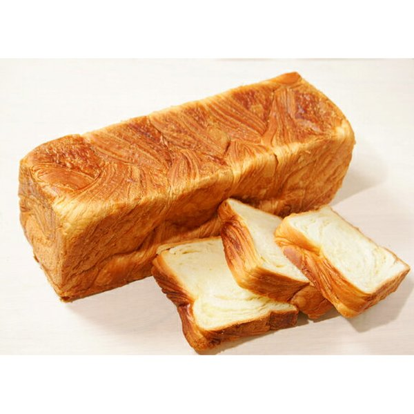
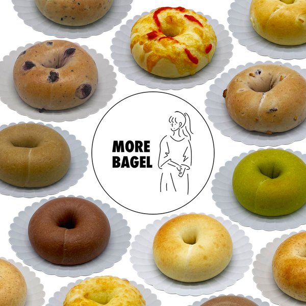
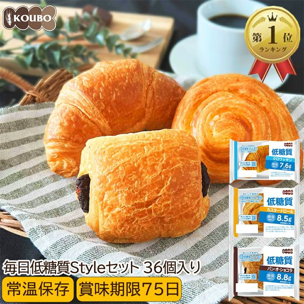
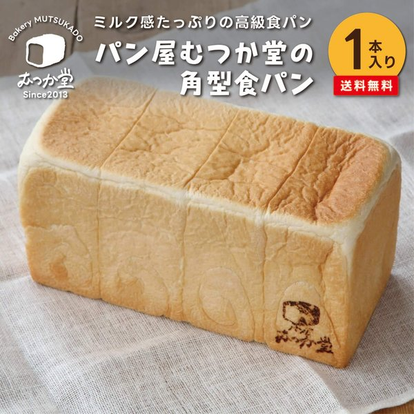
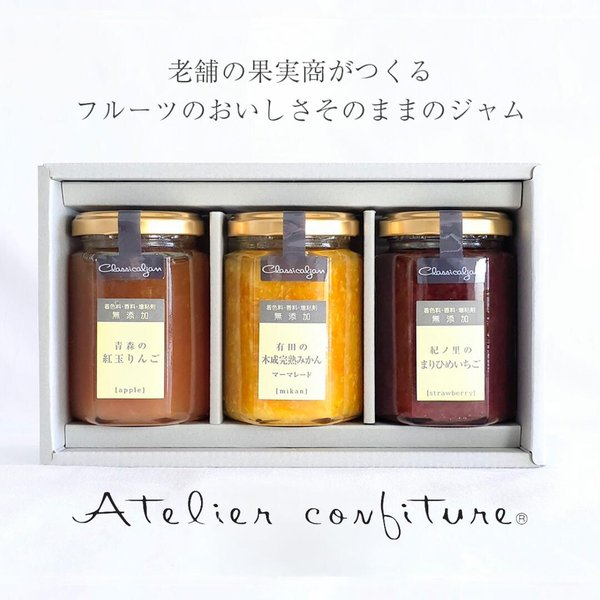
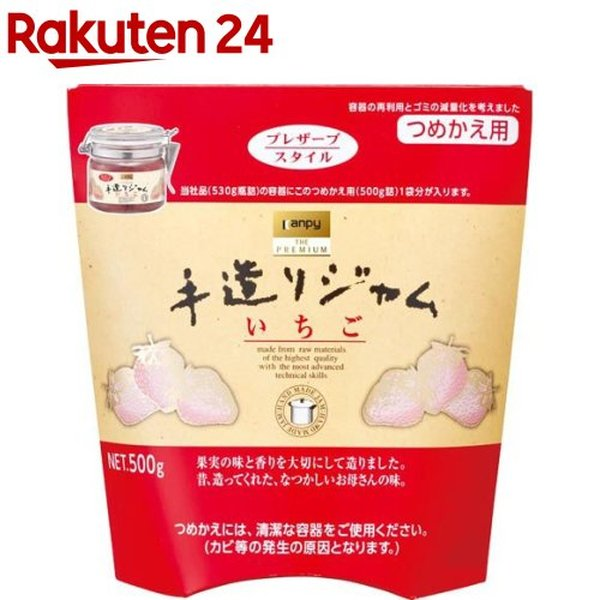
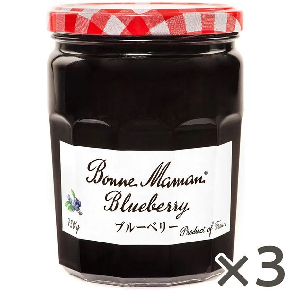
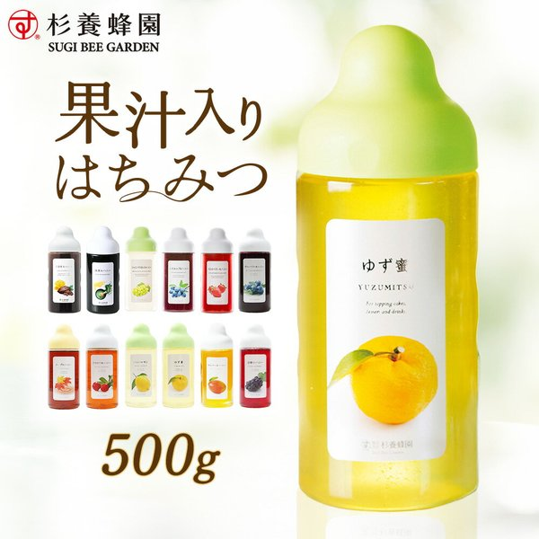
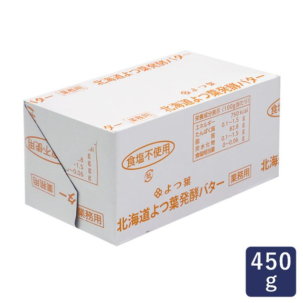

【2026年・お取り寄せパン】冷凍クロワッサン・デニッシュ食パン・ベーグル・低糖質パンと高級ジャム・国産はちみつ・発酵バター10選｜朝の食卓を格上げ
朝ごはんを変えるのは、実はパンでもコーヒーでもなく「焼きたての香り」です。冷凍パンなら、食べたい分だけ焼いて、焼きたてを食卓に出せます。
選ぶ軸は3つです。まず冷凍か常温か。クロワッサンやベーグルは冷凍で届くものが多く、焼き戻せば焼きたてに近い状態が戻ります。低糖質パンのような常温のロングライフパンは、備蓄と主食置き換えに向いています。次に何も塗らずに食べられるか。デニッシュ食パンやリッチな食パンは、バターなしでも成立します。最後に合わせるもの。ジャムは低糖度・無添加、はちみつは果汁入り、バターは発酵タイプを1つ持つと、同じパンでも飽きずに食べられます。
本記事では、楽天市場で人気・高評価のお取り寄せパンとジャム10選を、実売価格とレビュー評価つきで写真付き紹介します。
- おすすめ10選 スペック・特徴比較表
- BEST 1｜冷凍クロワッサンセット（無添加・国産小麦）
- BEST 2｜デニッシュ食パン 3斤×2本セット
- BEST 3｜手作りベーグル 選べる8個セット
- BEST 4｜低糖質パン 毎日低糖質Style 36個入り
- BEST 5｜角型リッチミルク食パン 1本
- BEST 6｜ジャム3本セット（りんご・マーマレード・いちご）
- BEST 7｜ザ・プレミアム手造りジャム いちご 500g つめかえ用
- BEST 8｜ブルーベリージャム 750g×3個
- BEST 9｜果汁入りはちみつ ゆず 500g
- BEST 10｜北海道よつ葉発酵バター 食塩不使用 450g
- 【読者負担0円】買わなくても得する無料サービス
- まとめ：お取り寄せパンとジャム10選の選び方
| 順位 | 商品名 | ブランド | 最大の特徴・おすすめ理由 | 総合評価 |
|---|---|---|---|---|
| BEST 1 | 冷凍クロワッサンセット（無添加・国産小麦） | 神戸レコルト（récolte） | マーガリン不使用・無添加 | 4.86 |
| BEST 2 | デニッシュ食パン 3斤×2本セット | ボローニャ | バターを折り込んだデニッシュ食パン | 4.62 |
| BEST 3 | 手作りベーグル 選べる8個セット | モアベーグル（MORE BAGEL） | 国産小麦の手作りベーグル | 4.82 |
| BEST 4 | 低糖質パン 毎日低糖質Style 36個入り | 工房パネトーネ | 糖質控えめのロングライフパン | 4.67 |
| BEST 5 | 角型リッチミルク食パン 1本 | パン屋むつか堂 | 国産小麦とミルクのリッチな生地 | 4.65 |
| BEST 6 | ジャム3本セット（りんご・マーマレード・いちご） | アトリエ コンフィチュール | 果実商ならではの素材 | 4.67 |
| BEST 7 | ザ・プレミアム手造りジャム いちご 500g つめかえ用 | カンピー（加藤産業） | ペクチン不使用の低糖度 | 4.73 |
| BEST 8 | ブルーベリージャム 750g×3個 | ボンヌママン（S&B食品） | 果肉入りのブルーベリージャム | 4.41 |
| BEST 9 | 果汁入りはちみつ ゆず 500g | 杉養蜂園 | ゆず果汁入りのはちみつ | 4.77 |
| BEST 10 | 北海道よつ葉発酵バター 食塩不使用 450g | よつ葉乳業 | 発酵バターの香り | 4.71 |
冷凍クロワッサンセット（無添加・国産小麦）

神戸レコルトのクロワッサンセットは、三ツ星と農林水産大臣賞を受賞した冷凍パンです。マーガリン不使用、国産小麦、無添加の生地を冷凍で届けるので、食べたい分だけオーブンで焼き戻せます。焼きたては外がさくっと、中はバターの香りが広がります。5つ星ホテルでも採用されている味で、休日の朝に焼くだけでカフェの朝食になります。楽天市場での実売価格は約3,490円（2026年11月時点）。
- マーガリン不使用・無添加
- 国産小麦
- 冷凍で食べたい分だけ焼ける
- 焼き戻しにオーブンが必要
デニッシュ食パン 3斤×2本セット

神戸のベーカリー、ボローニャのデニッシュ食パンです。3斤を2本、計6斤のセット。デニッシュ食パンは、バターを折り込んだ生地を食パン型で焼いたもので、トーストすると外はさくっと、中はしっとり。そのままでも甘みがあり、何も塗らずに食べられます。1本を冷凍しておけば、少しずつ長く楽しめます。楽天市場での実売価格は約4,298円（2026年11月時点）。
- バターを折り込んだデニッシュ食パン
- 3斤×2本のセット
- トーストすると香りが立つ
- デニッシュ生地なので、食事パンよりカロリーは高め
手作りベーグル 選べる8個セット

手作りベーグル専門店、モアベーグルの選べる8個セットです。国産小麦を使い、自社で製造しています。プレーン、チョコ、いちご、抹茶などのフレーバーから選べ、冷凍で届くので、食べるときは自然解凍してトーストするだけ。ふわもちの食感で、市販のベーグルより柔らかく、朝食にそのまま出せます。楽天市場での実売価格は約3,640円（2026年11月時点）。
- 国産小麦の手作りベーグル
- 8個から選べる
- 冷凍で日持ちする
- レビューは50件と少なく、味の好みが分かれやすい
低糖質パン 毎日低糖質Style 36個入り

低糖質パンの専門店、工房パネトーネの「毎日低糖質Style」36個セットです。1個あたりの糖質を抑えたロングライフパンで、常温で75日保存できます。パサつきが少なく、そのままでもトーストしても食べられる味。糖質を控えたい人の主食置き換えや、災害用の備蓄としても使えます。36個入りなので、毎日1個なら1か月以上もちます。楽天市場での実売価格は約5,800円（2026年11月時点）。
- 糖質控えめのロングライフパン
- 常温で75日保存できる
- 36個入り
- 普通の食パンより風味は軽く、甘さは控えめ
角型リッチミルク食パン 1本

博多のベーカリー、パン屋むつか堂の角型食パンです。国産小麦とミルクを使ったリッチな生地を角型で焼き上げた1本で、冷凍で届きます。自然解凍してから食べたい分だけ切り、トーストすると耳まで柔らかい食感が戻ります。ミルクの甘みがあるので、バターなしでも食べられます。お試し1本から注文できるのも選びやすいところです。楽天市場での実売価格は約1,980円（2026年11月時点）。
- 国産小麦とミルクのリッチな生地
- 冷凍で日持ちする
- 1本から試せる
- レビューは54件と、まだ少なめ
ジャム3本セット（りんご・マーマレード・いちご）

果実商がつくるジャム、アトリエ コンフィチュールの3本セットです。青森の紅玉りんご、有田の木成完熟みかんマーマレード、紀ノ里のまりひめいちごの各150g。無添加・低糖度で、果実そのものの酸味と香りが残っています。ヨーグルトにのせても、トーストに塗っても、果物を食べている感覚に近いジャムです。楽天市場での実売価格は約3,520円（2026年11月時点）。
- 果実商ならではの素材
- 無添加・低糖度
- 3種の食べ比べ
- 低糖度なので、開封後は冷蔵で早めに食べ切る
ザ・プレミアム手造りジャム いちご 500g つめかえ用

加藤産業のカンピー「ザ・プレミアム」手造りジャム、いちごの500gつめかえ用です。ペクチン不使用、糖度50度の低糖度タイプで、いちごの果肉と酸味が残っています。500gの大容量なので、ヨーグルトやパンにたっぷり使えます。つめかえ用の袋タイプなので、瓶を洗って詰め替えればゴミも増えません。楽天市場での実売価格は約980円（2026年11月時点）。
- ペクチン不使用の低糖度
- 500gの大容量
- つめかえ用で使い切れる
- つめかえ用なので、保存用の瓶が別に要る
ブルーベリージャム 750g×3個

フランスのボンヌママンのブルーベリージャム、750g×3個の大容量セットです。S&B食品の公式ショップからの販売で、たっぷり使える業務用サイズ。ブルーベリーの果肉がごろごろ入り、甘さの中に酸味があります。パンはもちろん、ヨーグルトやパンケーキ、ソースに使っても。3個あるので、1つは贈り物にも回せます。楽天市場での実売価格は約4,536円（2026年11月時点）。
- 果肉入りのブルーベリージャム
- 750g×3個の大容量
- 公式ショップの正規品
- レビューは22件と少なく、3個使い切るのに時間がかかる
果汁入りはちみつ ゆず 500g

熊本の養蜂メーカー、杉養蜂園の果汁入りはちみつ、ゆず500gです。はちみつにゆず果汁を合わせたもので、ヨーグルトや紅茶にそのまま溶かせます。はちみつの甘さにゆずの酸味と香りが加わり、朝の1杯が飲みやすくなります。ふた付きの容器なので、スプーンですくって使えます。楽天市場での実売価格は約2,538円（2026年11月時点）。
- ゆず果汁入りのはちみつ
- ヨーグルト・紅茶に合う
- 500gの使い切りサイズ
- ゆずの風味が強いので、料理には使いにくい
北海道よつ葉発酵バター 食塩不使用 450g

北海道のよつ葉乳業の発酵バター、食塩不使用450gです。生乳から作ったクリームを発酵させてから練り上げたバターで、ヨーグルトのような発酵の香りがあります。食塩不使用なので製菓・製パンにも使いやすく、トーストに塗ればミルクのコクがそのまま味わえます。450gは業務用サイズなので、小分けして冷凍しておけます。楽天市場での実売価格は約1,390円（2026年11月時点）。
- 発酵バターの香り
- 食塩不使用で製菓にも使える
- 450gの業務用サイズ
- 冷蔵で届くので、使い切れない分は冷凍保存する
この記事の商品を買う前に、まずは無料で得する選択肢をチェック。どれも登録・利用は0円で、無料期間中に解約すれば料金はかかりません。読みたい雑誌がある人、ポイントを貯めたい人、アンケートなら気軽という人、それぞれに合うものを選べます。
初回31日無料・無料期間中に解約すれば0円 → 楽天ポイントモール｜登録無料で毎日ポイ活
買い物なしでもポイントが貯まる無料サービス → 楽天インサイト｜アンケートに答えてポイント
登録無料・すきま時間のアンケートで貯まる → 楽天カード｜年会費永年無料
新規発行・年会費ずっと0円 →
4つのサービスの違いと使い分けは「出費0円で得する！買わずにポイントが貯まる無料サービス厳選4選」でまとめています。
💡 まとめ：お取り寄せパンとジャム10選の選び方
お取り寄せパンは、冷凍で届くものを1つ、常温のロングライフパンを1つ持つと、日常と備えの両方が整います。クロワッサンは焼きたての香りが戻る冷凍タイプを、食パンは何も塗らずに食べられるデニッシュかリッチな生地を選ぶと、朝の支度が軽くなります。ベーグルは冷凍のまま自然解凍してトーストすれば、ふわもちの食感が戻ります。合わせるものは、低糖度のジャム、果汁入りのはちみつ、発酵バターの3つ。同じパンでも、塗るものを変えるだけで毎朝の楽しみが続きます。低糖質パンは、糖質を控えたい日と備蓄用に1袋あると安心です。
楽天市場では「5と0のつく日」や「お買い物マラソン」などのキャンペーンに合わせて購入すると、ポイント還元が最大化してお得に手に入ります。ぜひチェックしてみてくださいね。